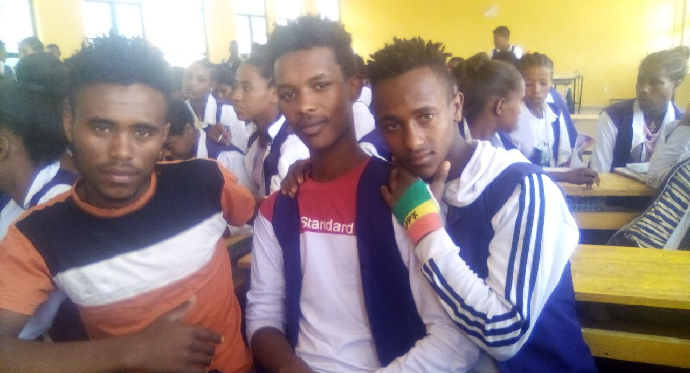
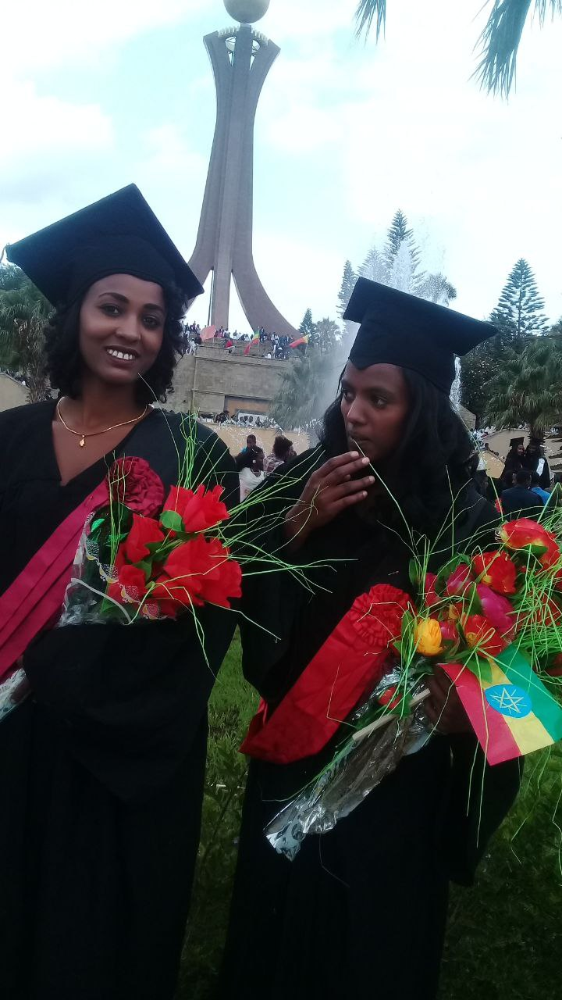
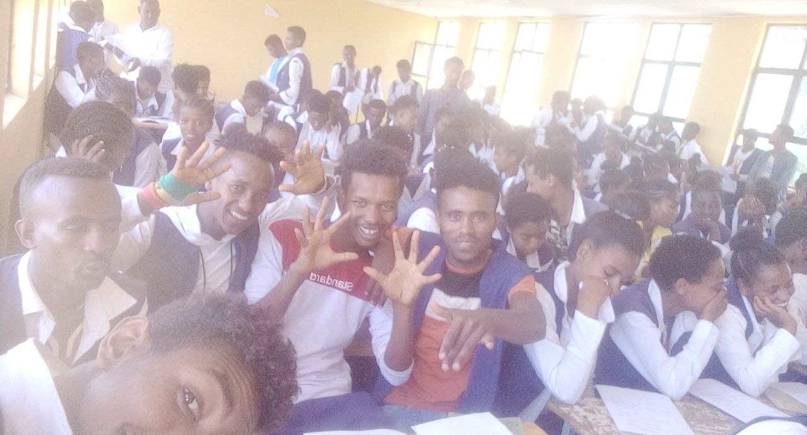
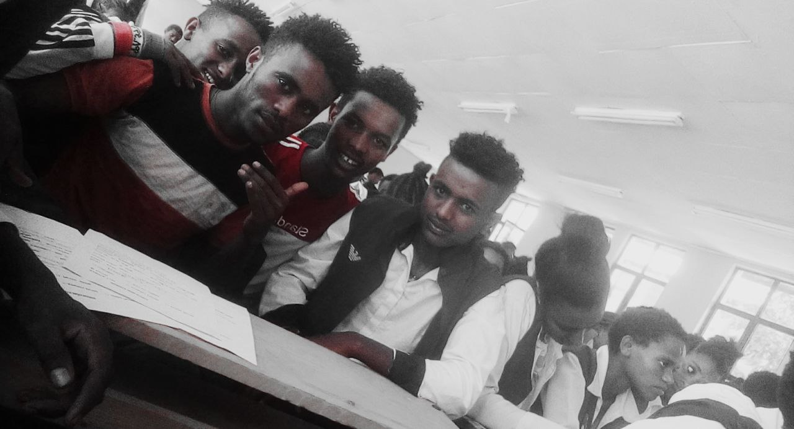
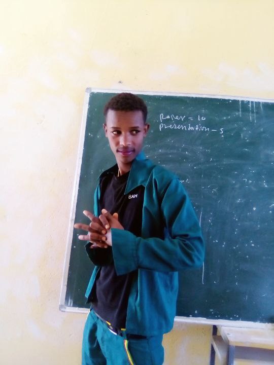

our contacts
Phone number:0933219291
EDUCATION
My name is Murad Abayinu, I started school in Hayek from 1-4,
it was founded in 1950, then Meket, it was founded from 5-8, it was founded in 1967,
I studied from Ministry Buhala Lalibela.I studied 9$10, founded in 1960,
then Gashna, I studied 11$12, founded in 2006,
then entrance came, I entered Jinka University.
Education is the process
of acquiring knowledge, skills, values, beliefs, and habits.
It is a lifelong journey of learning and gaining
experiences that shape an individual's understanding of the world around them,
their place in it, and their ability to contribute to society. Education takes various forms,
including formal schooling, informal learning, and practical experiences.
# Aspects of Education
- Formal Education:
Involves structured learning within educational
institutions such as schools, colleges, and universities
.
It follows a curriculum and is often guided by professional educators.
- Informal Education:
Happens outside of traditional educational settings.
It includes learning from everyday experiences, interactions with others,
self-study, and exposure to various media and information sources.




